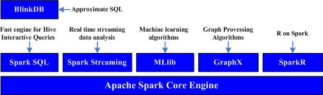
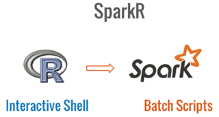
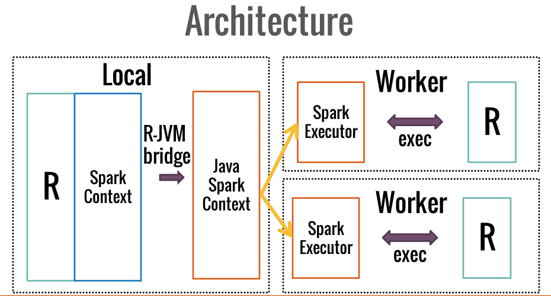

SparkR

Spark需要执行一个all-to-all操作。它必须读取所有分区，找到所有key的值，并跨分区把这些值放到一起来计算每个key的最终结果
——这就叫做洗牌
sc.textFile("hdfs://...")
.flatMap(_.split(" ")).map((_,1)).reduceByKey(_+_).saveAsTextFile(hdfs://...)


#4.1RDD api
.libPaths(c(file.path(Sys.getenv("SPARK_HOME"),"R","lib"), .libPaths()))
library(SparkR)
sc <- sparkR.init(master="local[2]",appName="WordCount")
lines <- SparkR:::textFile(sc, 'README.md')
words <- SparkR:::flatMap(lines,
function(line) {
strsplit(line, " ")[[1]]
})
wordCount <- SparkR:::lapply(words, function(word) { list(word, 1L) })
counts <- SparkR:::reduceByKey(wordCount, "+", 2L)
output <- SparkR:::collect(counts)
for (wordcount in output) {
cat(wordcount[[1]], ": ", wordcount[[2]], "\n")
}
#4.2DataFrame api
.libPaths(c(file.path(Sys.getenv("SPARK_HOME"),"R","lib"), .libPaths()))
library(SparkR)
library(magrittr)
sc <- sparkR.init(master="local[2]",appName="WordCount")
sqlCtx <- sparkRSQL.init(sc)
localDF <- data.frame(w=c("a", "a", "a", "b", "b", "c"))
df<-createDataFrame(sqlCtx, localDF)
wordcount<- df %>% group_by(df$w) %>% summarize(count = n(df$w)) %>% collect()
print(wordcount)
返回Blog: http://tianyv.github.io/train